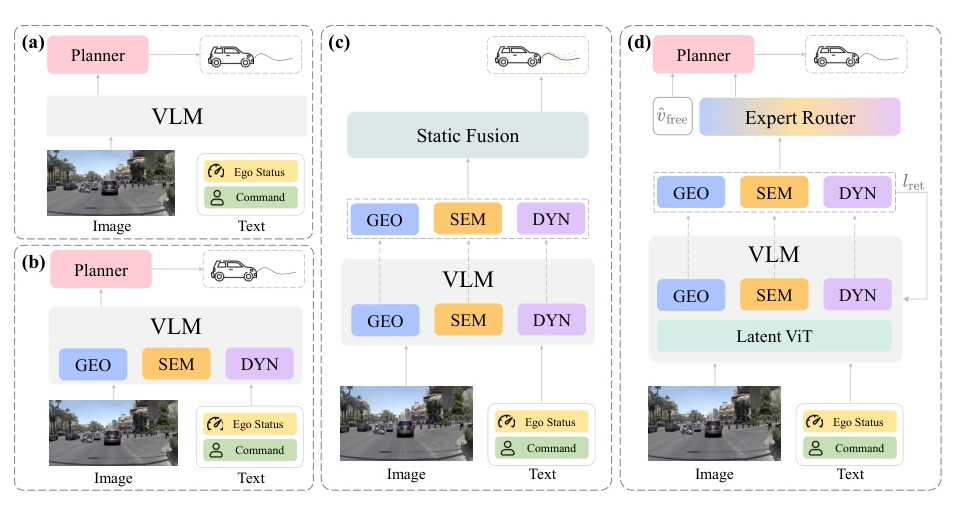
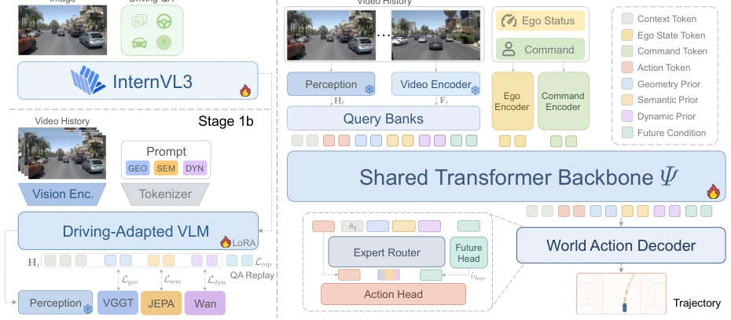
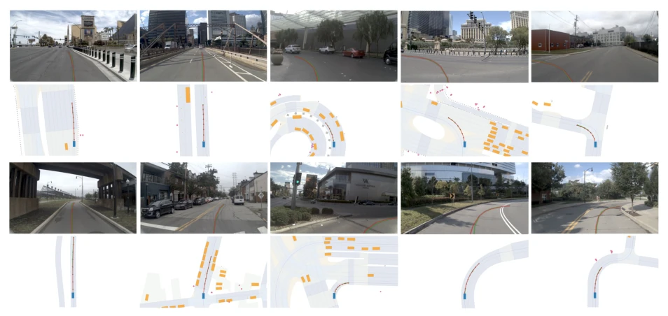
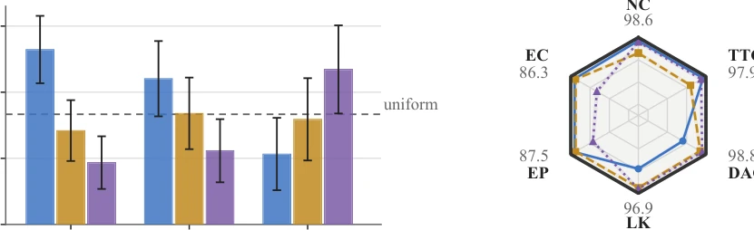

This paper performs a major overhaul on the "perception-planning" interface of end-to-end autonomous driving. PerceptDrive avoids burying knowledge in a single interface like some VLAs which leads to information decay; instead, it employs an "expert routing" mechanism to store geometric, semantic, and dynamic priors separately, then fuses them using scene-adaptive soft gating. The most striking aspect is distilling the router using privileged metrics during training, while outputting a single trajectory directly during inference, eliminating the need for test-time re-ranking. Although the NAVSIM leaderboard performance is indeed impressive, the reliance on privileged supervision feels like muscle memory trained on an "open-book exam", casting doubt on its generalization in open-world scenarios. However, achieving SOTA with a single camera is still commendable, though it remains to be seen if it will reveal limitations when the "privilege" is absent during inference.
End-to-end autonomous driving attempts to directly map observations to trajectories, but knowledge transfer suffers from two major mismatches. First, query-based planners compress heterogeneous signals into compact tokens; standard imitation objectives do not specify which source information should be retained, leading to the decay of scene-relevant cues. Second, static fusion uses scene-invariant weights, unable to adapt prior contributions to the current scene [14, 16, 48]. Existing methods inject knowledge via distillation or MoE, but typically target different stages of the planning pipeline; MoE routes parameters rather than frozen knowledge sources, and evaluator methods require test-time search [24, 49]. PerceptDrive aims to solve the representation interface problem between frozen perception providers and continuous world action planners, specifically mismatches at the compression and scene allocation levels.

Figure 1 Comparison of VLM-based planning paradigms. (a) Direct VLM conditioning: knowledge stays implicit in a single narrow interface, where task-relevant cues are attenuated. (b) Expert priors inside the VLM: without explicit separation, no objective specifies which prior survives compression. (c) Separated expert representations under static fusion: scene-invariant weights cannot adapt each prior’s contribution to the current scene. (d) PerceptDrive (Ours): per-branch retention anchors each compressed readout to its prior, and a scene-conditioned router reweights the expert conditions per scene, yielding one trajectory under self-predicted future conditioning without test-time scoring or reranking.
方法Method
PerceptDrive 分为冻结感知提供者构建与可训练世界动作模型训练两阶段。提供者将图像历史映射为携带几何、语义、动态先验的高层表示 Ht，视频编码器提供密集观测潜变量 Ft。WAM 通过查询银行压缩两流，每个专家分支通过保留目标锚定对应先验，防止信息坍缩。场景条件路由器从共享状态预测软门控，在生成前融合专家条件。动作头基于流匹配生成单轨迹。训练时利用特权规则子指标蒸馏路由门控，推理时移除特权组件，实现单摄像头单轨迹前馈规划。具体而言，提供者通过多教师蒸馏将 VGGT、V-JEPA 2 和 Wan 2.1 的知识注入专家槽位；WAM 中查询银行压缩信号，保留目标重构专家槽位目标以锚定分支；路由器基于场景状态预测门控权重，结合专家条件与未来潜变量，通过流匹配 actor 生成轨迹。
PerceptDrive consists of two stages: frozen perception provider construction and trainable world action model training. The provider maps image history to high-level representations Ht carrying geometric, semantic, and dynamic priors, while the video encoder provides dense observation latents Ft. WAM compresses both streams via a query bank; each expert branch anchors the corresponding prior via retention objectives to prevent information collapse. A scene-conditioned router predicts soft gating from shared states, fusing expert conditions before generation. The action head generates a single trajectory based on flow matching. During training, privileged rule sub-metrics are used to distill the routing gating; during inference, privileged components are removed to achieve single-camera single-trajectory feedforward planning. Specifically, the provider injects knowledge from VGGT, V-JEPA 2, and Wan 2.1 into expert slots via multi-teacher distillation; In WAM, the query bank compresses signals, and retention objectives reconstruct expert slot targets to anchor branches; The router predicts gating weights based on scene states, combining expert conditions with future latents to generate trajectories via a flow matching actor.

Figure 2 Overview of PerceptDrive. Stages 1a/1b build the frozen provider: driving-QA adaptation of InternVL3, then multi-teacher distillation of the [GEO]/[SEM]/[DYN] priors from frozen VGGT, V-JEPA 2, and Wan 2.1 teachers with QA replay. Stage 2 trains the world-action model: query banks compress Ht and Ft, the backbone Ψ fuses them with ego state and command, and the router, future head, and action head generate one trajectory.
Evaluated on NAVSIM v1/v2 navtest, PerceptDrive achieves 90.4 PDMS and 90.2 EPDMS with a single camera, surpassing existing VLA and world model methods. Ablation studies show gains from future conditioning, metric-aware supervision, branch retention, and routing distillation. Expert masking experiments indicate clear division of labor among priors: [SEM] affects safety metrics, [GEO] affects road geometry, [DYN] affects progress and comfort. Routing weights vary with navigation instructions; geometric expert weights are high during turns, while dynamic experts dominate during straight driving, confirming the effectiveness of scene-conditioned routing. The model is stable under three training seeds, with extremely small standard deviation across evaluation seeds.

Figure 3 Qualitative results on NAVSIM navtest. Each example pairs the front-view observation (top) with its BEV context and the generated trajectory (bottom). The red curve marks the trajectory generated by PerceptDrive and the green curve the logged human trajectory, both projected onto the front and bev view.

Figure 4 Ablation Studies Visualization. (a) Mean routing weights ¯α by navigation command on navtest (whiskers: within-command std; n below each command): gates shift toward the geometric expert under turns (Left/Right) and the dynamic expert under straight cruising, retaining within-command dispersion (mean std 0.11). (b) Sub-metric profiles under inference-time expert masking; each axis spans a uniform 7-point range below Full (rings: −2/ −4/ −6; shading: 95% bootstrap bands). Masking degrades mainly the expert’s own sector: [SEM] safety (NC, TTC), [GEO] road (DAC, LK), [DYN] progress/comfort (EP, EC).